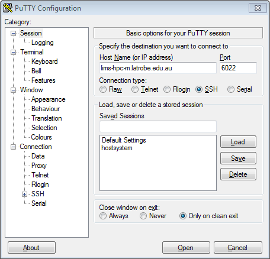
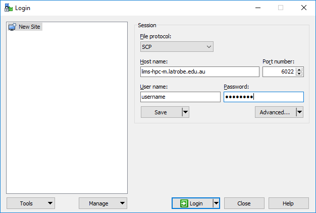
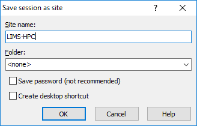
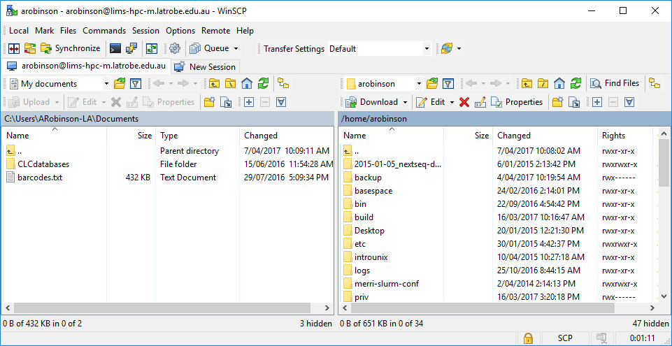

HPC Access
Applying for an account
User = task to be completed by LTU Staff/Student requiring access to LIMS-HPC. Lab-head = task to be completed by the LTU lab-head for the lab which user belongs to.
- User to carefully read archive documentation:
- User to carefully read, sign and give to supervisor archive access form:
- Lab-head to complete an AskICT "Unix Research Support" request (AskICT > Get Help > Research Support > Unix Research Support)
- AskLaTrobe
- if User is a staff member select "Who requires this service?" = "Someone Else" and "Type their name in the "Select the staff member for this server box". For students just leave it as "Yourself"
- Click "Add attachments" and select the Archive Access Form provided by User
- Complete the "Description of request" using the template below and the following replacements:
- FIRSTNAME: user's first/given name
- NAME: full name of user
- USERNAME: if the user is a student then this must be their STUDENTS domain username. Otherwise, their LTU domain username.
- EMAIL: the user's LTU/STUDENTS email address. Optionally you can provide a second alternate email if they want.
- LABGROUP: Lab-head's surname followed by "lab" e.g. smithlab
- AskLaTrobe
New LIMS-HPC user for FIRSTNAME
Name: NAME
Username: USERNAME
Email: EMAIL
Group: LABGROUP
Connecting
Click the link below to expand the relevant instructions for your Operating System
Both Mac OS X and Linux come with a version of ssh (called OpenSSH) that can be used from the command line. To use OpenSSH you must first start a terminal program on your computer. On OS X the standard terminal is called Terminal, and it is installed by default. On Linux there are many popular terminal programs including: xterm, gnome-terminal, konsole (if you aren't sure, then xterm is a good default). When you've started the terminal you should see a command prompt. To log into LIMS-HPC, for example, type this command at the prompt and press return (where the word username is replaced with your LIMS-HPC username):
$ ssh -p 6022 username@lims-hpc-m.latrobe.edu.au
The same procedure works for any other machine where you have an account except that if your Unix computer uses a port other than 22 you will need to specify the port by adding the option -p PORT with PORT substituted with the port number.
You may be presented with a message along the lines of:
The authenticity of host 'lims-hpc-m.latrobe.edu.au (131.172.36.150)' can't be established.
...
Are you sure you want to continue connecting (yes/no)?
Although you should never ignore a warning, this particular one is nothing to be concerned about; type yes and then press enter. If all goes well you will be asked to enter your password. Assuming you type the correct username and password the system should then display a welcome message, and then present you with a Unix prompt. If you get this far then you are ready to start entering Unix commands and thus begin using the remote computer.
On Microsoft Windows (Vista, 7, 8) we recommend that you use the PuTTY ssh client. PuTTY (putty.exe) can be downloaded from this web page:
http://www.chiark.greenend.org.uk/~sgtatham/putty/download.html
Documentation for using PuTTY is here:
http://www.chiark.greenend.org.uk/~sgtatham/putty/docs.html
When you start PuTTY you should see a window which looks something like this:

To connect to LIMS-HPC you should enter lims-hpc-m.latrobe.edu.au into the box entitled "Host Name (or IP address)" and 6022 in the port, then click on the Open button. All of the settings should remain the same as they were when PuTTY started (which should be the same as they are in the picture above).
In some circumstances you will be presented with a window entitled PuTTY Security Alert. It will say something along the lines of "The server's host key is not cached in the registry". This is nothing to worry about, and you should agree to continue (by clicking on Yes). You usually see this message the first time you try to connect to a particular remote computer.
If all goes well, a terminal window will open, showing a prompt with the text "login as:". An example terminal window is shown below. You should type your LIMS-HPC username and press enter. After entering your username you will be prompted for your password. Assuming you type the correct username and password the system should then display a welcome message, and then present you with a Unix prompt. If you get this far then you are ready to start entering Unix commands and thus begin using the remote computer.

Transfer files
Click the link below to expand the relevant instructions for your Operating System
Note: if you are wanting to transfer files from/to another HPC system, use the Linux instructions and do it directly from either HPC (i.e. first login using SSH/Putty).
Both Mac OS X and Linux come with software that enables you to transfer files to and from LIMS-HPC. There are two commands you can use: scp and rsync. The differences are that the scp command is easier to use and rsync does some verification that transfer was successful. We will use scp here however if you want to use rsync see the Archiving page or the rsync manpage.
The scp command works very much like the cp with the only difference being how you specify files on the remote server.
Example filenames
## specifying local file(s) ##
# full path
/home/group/mylab/mydir/myfile.txt
# relative file
myfile.txt
# relative path
mydir/myfile.txt
# wildcards
mydir/*.fa
## specifying a remote file ##
# full remote path
username@lims-hpc-m.latrobe.edu.au:/home/group/mylab/mydir/myfile.txt
# if your username is same on both computers you can leave it off
lims-hpc-m.latrobe.edu.au:/home/group/mylab/mydir/myfile.txt
# relative file (remote relative files are always relative to your home directory)
lims-hpc-m.latrobe.edu.au:myfile.txt
lims-hpc-m.latrobe.edu.au:../group/mylab/mydir/myfile.txt
Example scp commands
The SOURCE_FILE(s) are the files that currently exist and DESTINATION_FILE_OR_DIR is where you want them to be copied. Either the SOURCE or DESTINATION files can be a remote (but not both). As with cp, if you specify multiple source files (or wildcard) the destination must be an existing directory.
# structure
scp -P 6022 SOURCE_FILES DESTINATION_FILE_OR_DIR
# example (1 file) PC to LIMS-HPC
scp -P 6022 myfile.txt username@lims-hpc-m.latrobe.edu.au:/home/group/mylab/mydir/
# example (1 file) LIMS-HPC to PC
scp -P 6022 username@lims-hpc-m.latrobe.edu.au:/home/group/mylab/mydir/myfile.txt .
# example (whole directory) PC to LIMS-HPC
scp -P 6022 -r myfiles/ username@lims-hpc-m.latrobe.edu.au:/home/group/mylab/mydir/
# example (wildcards) PC to LIMS-HPC
# wildcards only work on source
scp -P 6022 myfiles/*.fa username@lims-hpc-m.latrobe.edu.au:/home/group/mylab/mydir/
Note: the port option (-P 6022) is only needed when the remote server is LIMS-HPC. If you are transferring files to/from another HPC (from LIMS-HPC) you don't need port 6022. The default port is 22 which most HPCs use.
As with connecting to LIMS-HPC, Windows requires a third party software package in order to transfer files. We recommend that you use WinSCP
Download Software
Open the WinSCP Download page in your browser.
If you have administrator access on your computer, it is best to download the Installation Package. However, if you are not then get the Portable executables instead.
Connecting with WinSCP
When you first start WinSCP it will present you with a screen like below.

- Complete form fields
- File protocol: SCP
- Host name: lims-hpc-m.latrobe.edu.au
- Port number: 6022
- User name: Your LIMS-HPC username
- Password: Your LIMS-HPC password
- Click Save button (so you don't need to type it in future)

- Give the session a Site name of LIMS-HPC
- Click OK button
- Double-click on LIMS-HPC from the left-hand list. In future, you can skip all above steps.
Transferring files
Once connected you will be presented with a window resembling below however the files will depend on the files in your computer or LIMS-HPC accounts.

The left-hand list of files are those on your PC and the right-hand list are LIMS-HPC. You can browse the directories on each side like you would using the file explorer on your PC.
To transfer files from LIMS-HPC to your PC simply drag them from the right-hand list to the left-hand list.
To transfer files from your PC to LIMS-HPC drag them left to right.
Note: the first time you transfer a file (or directory) you will be asked how to do it; simply accept the window (and tick the box to not show in future if you want)
Adding the HPC to your file browser
To avoid the command line and use the regular graphical user interface, you can add a LIMS-HPC folder to you file browser. Click the link below to expand the relevant instructions for your Operating System
Not available yet.
Open your regular file browser (Nautilus in Ubuntu). On the left-hand side at the bottom click Connect to server.
Enter the following address: sftp://username@lims-hpc-latrobe.edu.au:6022/home/username, replacing username with your LIMS-HPC username.
Click Connect.
Enter your password when prompted, then you can navigate your files by clicking around.
Download Swish and install. Open your file browser and navigate to Computer or This PC (Windows 10). You should see an icon named Swish. Double-click on it to open. On the top bar click Add sftp connection.
- Complete form fields
- Host name: lims-hpc-m.latrobe.edu.au
- Port number: 6022
- User name: Your LIMS-HPC username
- Folder: /home/username
- Click Connect button, and enter your LIMS-HPC password when prompted
You can now navigate your files by clicking around.